Labview 编程实例
程序的功能：读取通道1的屏幕波形数据。
进入Labview编程环境，按下列步骤操作：
1. 添加程序控件“VISA资源名称”和“波形图”，如下图所示：
|
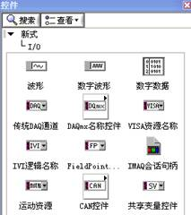 VISA资源名称 |
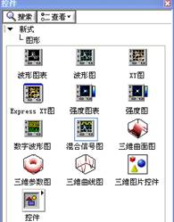 波形图 |
前面板显示
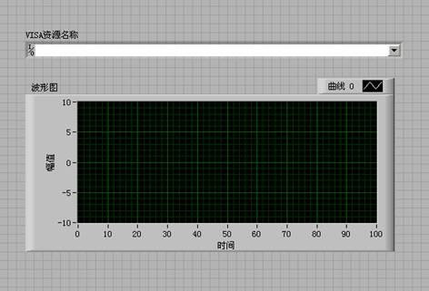
2. 打开程序框图面板，选择仪器I/O→VISA分别添加以下函数，VISA写入、VISA读取、VISA打开、VISA关闭函数。
|
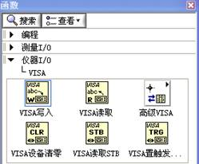 |
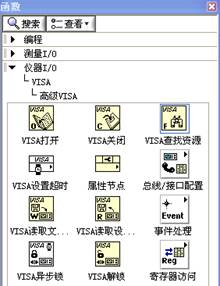 |
3. 将VISA资源名和VISA打开相连，将所有函数的VISA资源名称输出和VISA资源名称连接，错误输出和错误输入连接，如下图示：
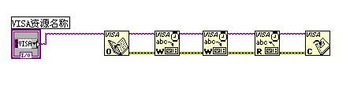
4. 在VISA写入控件的写入缓冲区添加文本框，分别写入：“:WAV:FORM BYTE”和“:WAV:DATA CHAN1”。前者是设置波形以BYTE格式读取，后者用来读取屏幕波形数据。读取波形数据通过VISA读取函数完成，VISA读取函数要求输入读取的字节总数，本例中读取的波形数据长度总字节数小于2048，VISA操作完成后关闭VISA资源。
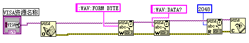
5. 读取的数据格式为TMC头+波形数据点+结束符。TMC头为#NXXXXXX的形式，#为TMC规定的头标志符，N表示后面含有N个字节， 以ASCII字符的形式描述波形数据点的长度，结束符用于表示通讯的终止。例如，一次读取的数据为：#9000001400XXXX表示9个字节描述数据的长度，000001400表示波形数据的长度，即1400字节。提取出N的数值，通过使用“部分字符串”和“十进制数字字符串至数值转换”两个函数完成。
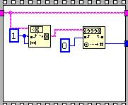
|
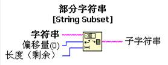 |
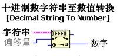 |
提取出有效的波形数据长度：
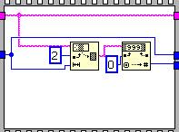
6. 通过“字符串至字节数组转换”将字符数据转换为数组形式，即可在波形图控件上显示波形数据，然后通过“数组子集”函数去掉头部的TMC数据头。
|
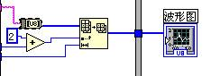 |
|
|
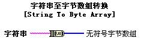 |
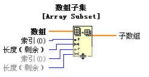 |
7. 完整的程序框图如下所示：
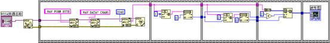
8. 在VISA资源名称列表框中选择设备资源，启动运行。
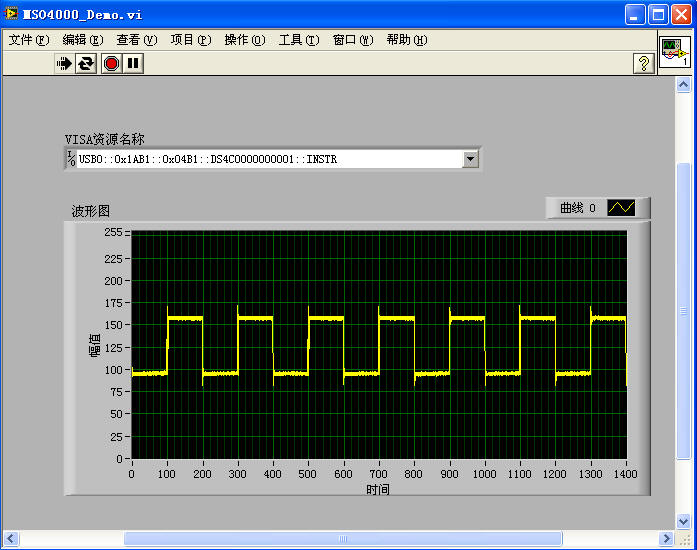